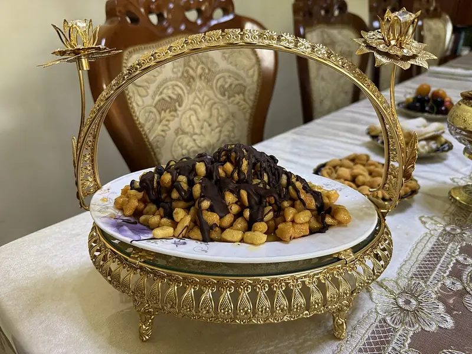

Фото: Panpanchik, CC BY 4.0

Чак-чак
Татарская сладость из обжаренных кусочков теста, залитых медовым сиропом
90 мин8 порц.390 ккал на порциюБ 8 · Ж 14 · У 59Татарская кухня
Продукты на 8 порц.
- Яйцо куриное4 шт
- Соль1 щеп.
- Мука пшеничная2 стак.
- Растительное масло80 мл
- Мёд7 ст. л.
- Сахар4 ст. л.
Как готовить
- Взбейте яйца с солью вилкой. Подсыпая муку, замесите крутое гладкое тесто, 10 минут. Накройте и оставьте на 20 минут.
- Раскатайте тесто тонким пластом 2-3 мм, нарежьте полосками шириной 1 см, а их кусочками по 5 мм.
- Разогрейте в глубокой кастрюле 0,5 л масла на среднем огне. Жарьте кусочки небольшими порциями 2-3 минуты, пока они не станут светло-золотистыми.
- Вынимайте шумовкой на бумажное полотенце, чтобы ушёл лишний жир.
- Для сиропа смешайте мёд с сахаром и варите на среднем огне 5-7 минут после закипания. Капля сиропа в холодной воде должна застывать мягким шариком.
- Залейте горячим сиропом кусочки теста, быстро перемешайте и выложите горкой на блюдо, придавливая мокрыми руками.
- Оставьте застывать на 1-2 часа при комнатной температуре.
Совет. Если сироп недоварить, чак-чак расползётся, если переварить, станет твёрдым как камень. Для фритюра нужно около 0,5 л масла, впитывается примерно 80 г.